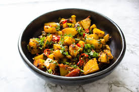

Dal Tadka
Dal Tadka is one of the most popular and widely eaten dishes in Indian mess kitchens. Made from yellow toor dal and finished with a hot ghee tadka, it is nutritious, flavourful and pairs perfectly with plain rice or roti.

Aloo Sabzi
Aloo Sabzi is a simple and comforting potato dish cooked with basic spices and onion. It is a staple in every Indian household and mess and goes well with roti or rice as a quick everyday meal.

Steamed Rice
Plain steamed rice is the most common staple food served in Indian mess kitchens. When cooked properly with the right water ratio, it becomes soft, fluffy and the perfect base for any curry or dal.